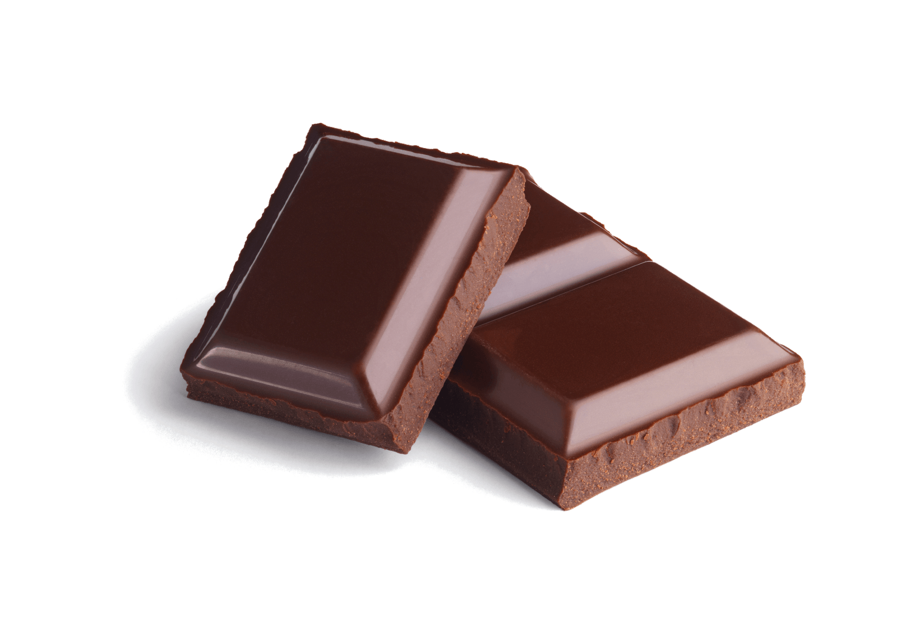

Chocolate 10/26/2020
Despite the cancellation of trick-or-treating, I am here today to bring you the last nominee for Candy Awards 2020.
Chocolate. The most sentimental yet fundamental treat, chocolate can be enjoyed at any time of the day, whether it
is in the morning or after supper. Many argue that chocolate should not be categorized as candy, but I will be
talking about that in a later blog post. Today, I will walk you through everything you will need to know about
chocolate.
If you haven’t tried chocolate before, it is a preparation of cacao beans. It is first fermented, then dried, cleaned,
and roasted. Chocolate can come in various forms and shapes, whether it is a bar, baked goods, or even a drink. There
are many types of chocolate, such as white chocolate, dark chocolate, and milk chocolate. Personally, I favour white
chocolate over the other types, mostly because I find it sweeter.

Chocolate dates back to as early as 1900 BC. It was made primarily as a drink combined with multiple spices. The first
edible chocolate bar was created in 1847, by J.S Fry & Sons, a candy company. Nowadays, chocolate can be found everywhere,
and it is widely used at parties, celebrations, and weddings.
If you ever plan on buying chocolate, I recommend that you buy the ones from Cadbury. They are cheap, sweet, and they
encourage responsible farming.
By Kian, approved candy expert since 2010.
PS. this will be my last blog post for this month, so if there is anything you would like to tell me, you might a delayed response.
Also, please participate in the polls! They mean a lot to me!
Sources: Wikipedia contributors. "Chocolate." Wikipedia, The Free Encyclopedia. Wikipedia, The Free Encyclopedia, 8 Oct. 2020. Web. 26 Oct. 2020.
Anon. "chocolate" Google Images. Accessed Oct 26, 2020
Christopher Klein, "The Sweet History of Chocolate", History, Feb 13, 2014. Accessed Oct 26, 2020.